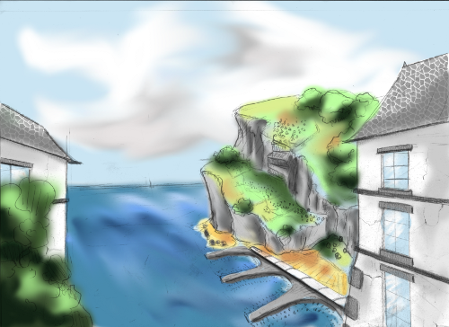
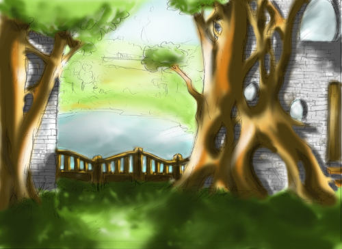
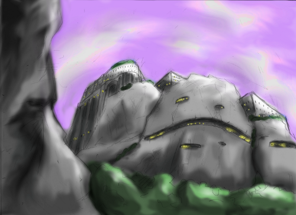

Le monde de Cusimilia est composé d'un seul continent et est divisé en 7 pays principaux.
Ce pays, dont la capitale porte le même nom est surnommé le Royaume Central de part sa position géographique. Autrefois, lors des guerres tribales, il accueillait les nombreux réfugiés qui fuyaient les conflits. Sa population est très hétéroclite. Cependant, la majorité de la population reste tout de même humaine, race d'origine de ce pays.
La capitale du Royaume, Nobat, regroupe un nombre impressionnant d'haut-lieu de magie, d'institutions et d'écoles prestigieuses. L'école la plus reconnue (également de manière internationale) est l'Ecole d'Art de de Magie. Cette école forme les mage de haut niveau ainsi que les artistes qualifié de magie.
La capitale du Royaume, Nobat, regroupe un nombre impressionnant d'haut-lieu de magie, d'institutions et d'écoles prestigieuses. L'école la plus reconnue (également de manière internationale) est l'Ecole d'Art de de Magie. Cette école forme les mage de haut niveau ainsi que les artistes qualifié de magie.
Zart, surnommé le Royaume des démons, est vaste et peu connu étant donné que ce pays s'est toujours tenu à l'écart des autres. Cependant il fut tristement rendu célèbre il y a 200 ans lors de la guerre sombre.
Durant la guerre, Zart combattu les forces du jeune Royaume de Bao Lumina. Après des années de luttes acharnées, il fut vaincu et considéré comme un pays dangereux. Depuis, un mur immense, protégé par la magie empêche quiconque de sortir (et entrer) de Zart. Le seul passage est la porte de Zarion gardée par une entité immortelle. Celle-ci obéit aux dirigeants de Bao Lumina et ne laisse passer personne sans leur autorisation.
Durant la guerre, Zart combattu les forces du jeune Royaume de Bao Lumina. Après des années de luttes acharnées, il fut vaincu et considéré comme un pays dangereux. Depuis, un mur immense, protégé par la magie empêche quiconque de sortir (et entrer) de Zart. Le seul passage est la porte de Zarion gardée par une entité immortelle. Celle-ci obéit aux dirigeants de Bao Lumina et ne laisse passer personne sans leur autorisation.
Bao Lumina, jeune royaume d'îles flottantes artificielle, acquit sa renommée en vainquant les démons de Zart lors de la guerre sombre. Le royaume fut également officiellement reconnu à ce moment là. 200 ans auparavant, un dragon émeraude nommé Bao Zosaty le créa et le nomma Bao Lumina. Au fil des années le pays s'est imposé comme défenseur officiel de la justice et des lois. C'est lui qui définit les règles et fait la police des différents
royaumes. Cependant, il n'a aucune influence sur Zart et Arcan. Grand nombre d'interpellation de criminel ainsi que de procès sont effectué par les Luminiens.
Les 9 îles artificielles qui composent le Royaume ont été directement arrachées du sol d'Arcan, terre natale des Dragons Émeraude.
Peu de temps après sa création, le royaume de Bao Lumina déclara la guerre à Zart; la raison officiel fut que ce pays peuplé de démon, comme un danger permanent pour ses voisins. A l'exception de quelques Luminiens qui gardent précieusement le secret, nuls ne se souvient de l'exacte raision ainsi que du déroulement de cette guerre.
Les 9 îles artificielles qui composent le Royaume ont été directement arrachées du sol d'Arcan, terre natale des Dragons Émeraude.
Peu de temps après sa création, le royaume de Bao Lumina déclara la guerre à Zart; la raison officiel fut que ce pays peuplé de démon, comme un danger permanent pour ses voisins. A l'exception de quelques Luminiens qui gardent précieusement le secret, nuls ne se souvient de l'exacte raision ainsi que du déroulement de cette guerre.
Arcan est surnommé le Royaume au mille et un dragons. Ce vaste pays est le berceau de toutes les races de dragons.
Seules les contrées situées frontalières à Amani et Nobat ont été cartographiée.
Les montagnes d'Arcan, qui s'étend de la frontière d'Amani jusqu'au frontière avec Zart sont peuplée d'une race étrange mais pacifique: les golas.
Seules les contrées situées frontalières à Amani et Nobat ont été cartographiée.
Les montagnes d'Arcan, qui s'étend de la frontière d'Amani jusqu'au frontière avec Zart sont peuplée d'une race étrange mais pacifique: les golas.
Les pays elfiques sont également surnommés Royaumes du Nord, comme leur nom l'indique, il se situent au Nord de Crusimilia. Les trois pays bordent toute la partie "connue" de la mer d'Arcan (Voir Arcan pour la partie inconnue).
Même si les elfes vivent actuellement dans tous les pays de crusimilia, autrefois, ils gardaient farouchement leur pays et ne le quittaient que très rarement..
Même si les elfes vivent actuellement dans tous les pays de crusimilia, autrefois, ils gardaient farouchement leur pays et ne le quittaient que très rarement..

Au Nord-est, Lanoï, le Royaume marin des elfes argentés.

Entouré de ses deux comparses, Romatz, le Royaume des elfes Sylvestres, recouvert à plus de 90% de forêt.

Au Nord-Ouest, bordé par la mer et par les imposants massifs d'Arcan, Amani, le Royaume des elfes noirs.